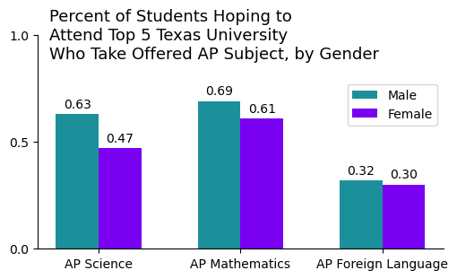
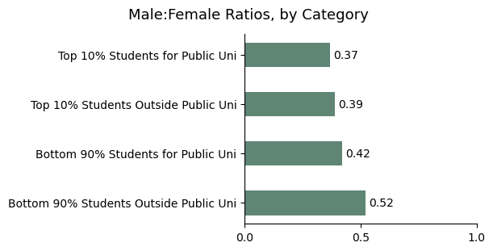
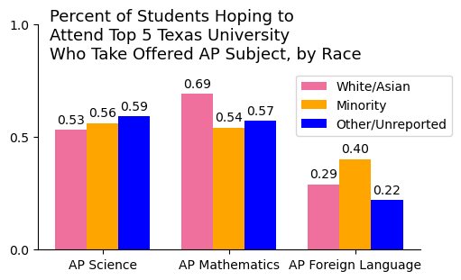
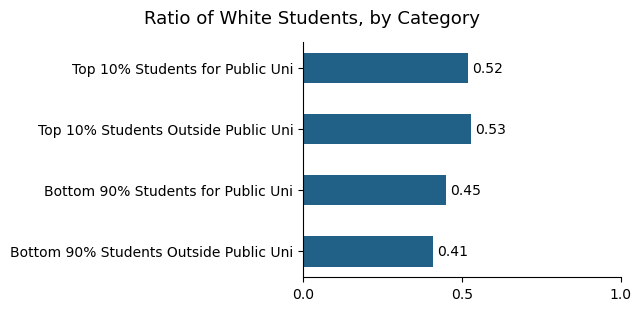

Usage - Top Students
Gender
In AP Science, there was a 15 percentage point deficit between male and female students offered the subject who took it. The gap was only 8 percentage points in AP Mathematics, and there was an even smaller gap for AP Foreign Language.
Only 37% of students who were in the top decile of their high school class and who planned to attend a Texas public university, which qualified them for the Top 10% Rule, were male. Among students outside the top decile who did not plan to attend a Texas public university, over half were male.
Race
Over half of students interested in going to a top 5 Texas university took AP Science when offered, and a higher percentage of minority and other/unreported race students took the subject than white/Asian students. In AP Mathematics there was a 15 percentage point deficit between white/Asian and minority students. This pattern was reversed for AP Foreign Language; 10 percentage point more minority students took the subject when offered than white/Asian students.
Over 50% of students in the top decile of their high school class were white. Of students outside of the top decile and not planning to go to a Texas public university, only 40% were white.
- Usage for All Students